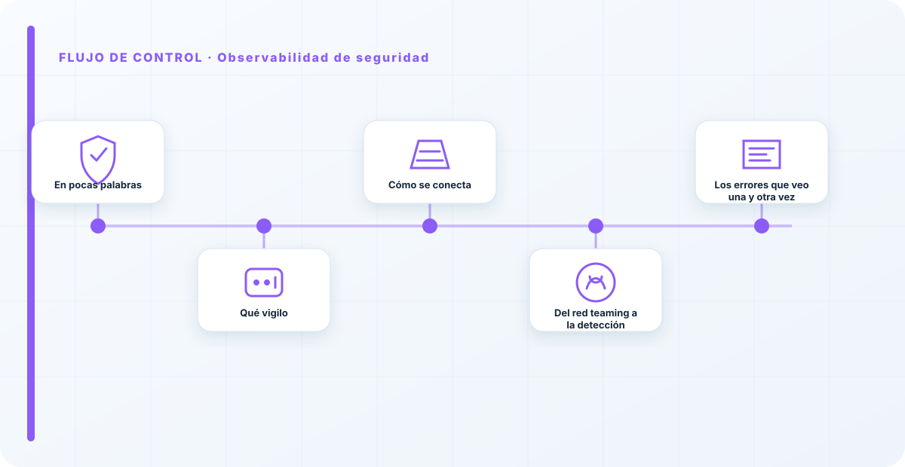
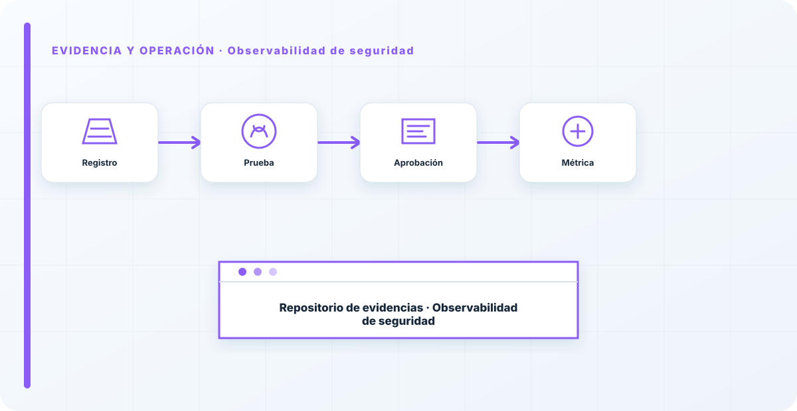

En pocas palabras
La observabilidad de seguridad es la capa que mira lo que la observabilidad operativa ignora: no si el sistema va bien, sino si alguien está intentando romperlo. Intentos de inyección, patrones de consulta compatibles con exfiltración, accesos anómalos, picos raros de uso. Es la diferencia entre enterarte de un ataque mientras ocurre o meses después, cuando el daño ya está hecho.
Qué vigilo
Señales de abuso, que rara vez saltan solas y hay que buscar activamente: intentos de manipulación en los prompts, patrones de consulta que huelen a extracción, uso de herramientas fuera de lo normal en agentes, accesos desde donde no toca o a horas raras.
A cada una le pongo un umbral que dispara una acción, no un correo más. La observabilidad de seguridad sin respuesta asociada es una cámara que graba pero que nadie mira: registra el robo y no lo evita.
Cómo se conecta
Esta capa alimenta la integración con el SIEM, donde estas señales se correlacionan con el resto de la seguridad, y la respuesta a incidentes, que es quien actúa. Y detecta en producción justo lo que las pruebas de red teaming te enseñaron a temer.
Es el puente entre saber que un ataque es posible —el red teaming— y darte cuenta de que está ocurriendo —la observabilidad—. Sin ese puente, el conocimiento del riesgo no se traduce en detección.

Del red teaming a la detección
Hay una conexión que me gusta explicitar: el red teaming te dice qué ataques son posibles contra tu sistema; la observabilidad de seguridad es la que te avisa de que uno está ocurriendo. Son las dos caras de lo mismo. Cada hallazgo de una prueba de red teaming debería convertirse en una señal que vigilar: si descubriste que tu modelo es vulnerable a cierto patrón de consultas, ese patrón es exactamente lo que hay que monitorizar.
Sin esa traducción, el conocimiento del riesgo se queda en un informe y no protege en el día a día. La observabilidad de seguridad es donde el red teaming se vuelve defensa continua.
La mayoría de las organizaciones observan sus sistemas de IA para que funcionen, no para ver si los atacan, y son dos cosas distintas. Un modelo puede ir perfecto de rendimiento mientras alguien lo exfiltra consulta a consulta. La observabilidad de seguridad es la que ve al atacante paciente, el que no rompe nada, solo pregunta demasiado. Sin ella, los ataques sigilosos son invisibles hasta que es tarde.
Los errores que veo una y otra vez
- Observar rendimiento y no seguridad.
- No buscar activamente señales de abuso.
- No poner umbrales que disparen acción.
- Dejar los eventos de seguridad de IA fuera del SIEM.
- Ignorar los ataques de paciencia por silenciosos.
Cómo lo llevaría a un entorno real
Cuando aterrizo observabilidad de seguridad en una organización, no empiezo por comprar una herramienta ni por redactar veinte páginas. Empiezo por dibujar qué ocurre hoy: quién solicita el cambio, quién lo aprueba, qué sistemas intervienen, qué datos cruzan el proceso y quién se entera cuando algo falla. Ese dibujo suele descubrir más problemas que cualquier checklist. En observabilidad, lo peligroso no es solo carecer de controles; también lo es creer que existen porque alguien los escribió una vez.
Después separo lo imprescindible de lo deseable. Lo imprescindible debe poder comprobarse: un responsable identificado, una regla clara, una evidencia fechada y un mecanismo para reaccionar. En este caso revisaría especialmente métrica, traza y log. No me vale una respuesta del tipo «lo gestiona el proveedor» o «eso lo mira seguridad». Necesito saber qué persona toma la decisión, con qué información y dentro de qué plazo.
La implantación debe crecer con el riesgo. Un piloto interno puede funcionar con una ficha breve y una revisión manual. Un sistema que afecta a clientes, empleados, dinero o información sensible necesita segregación de funciones, pruebas independientes, monitorización y un expediente mantenido. Mi criterio es sencillo: cuanto más difícil sea deshacer el daño, más fuerte debe ser la barrera antes de producción.
Decisiones que deben quedar por escrito
Hay decisiones que no deberían vivir en una reunión ni en un mensaje de chat. Para observabilidad de seguridad dejaría documentados el alcance, los supuestos, los límites de uso, las excepciones aceptadas y las condiciones que obligan a detener o reevaluar. El documento no tiene que ser enorme, pero sí debe permitir que otra persona entienda por qué se hizo lo que se hizo.
También registraría quién puede cambiar umbral, quién valida alerta y quién recibe las alertas relacionadas con panel. Cuando esas tres responsabilidades se mezclan, aparece el clásico problema: el mismo equipo construye, aprueba y declara que todo funciona. No siempre se puede separar por completo, sobre todo en organizaciones pequeñas, pero al menos debe existir una revisión por alguien que no dependa del éxito inmediato del despliegue.
Las excepciones merecen un tratamiento propio. Una excepción sin fecha de caducidad acaba convirtiéndose en la arquitectura real. Por eso exigiría motivo, riesgo aceptado, responsable, compensaciones, fecha de revisión y criterio de cierre. Si falta uno de esos elementos, no es una excepción gestionada; es una deuda invisible.

Un ejemplo práctico
Imaginemos que un equipo quiere incorporar observabilidad de seguridad a un servicio que ya está en producción. La propuesta promete reducir tiempos y automatizar tareas, pero utiliza componentes que cambian con frecuencia. Antes de aprobarlo, pediría una prueba limitada, un inventario de dependencias, un flujo de datos y una definición clara de qué acciones quedan fuera del alcance.
Durante la prueba recogería resultados normales y casos límite. No solo miraría si funciona; comprobaría qué ocurre cuando faltan datos, cambia una versión, se pierde conectividad, llega una entrada manipulada o un usuario intenta superar sus permisos. Ahí es donde se ve si el diseño aguanta. En muchas pruebas felices todo parece seguro porque nadie ha intentado romper la hipótesis de partida.
Si los resultados son aceptables, la salida a producción tendría condiciones: versión fijada, configuración aprobada, logs disponibles, responsables de guardia, procedimiento de rollback y revisión tras las primeras semanas. Si alguno de esos elementos no existe, prefiero retrasar el despliegue. Un día de demora suele ser más barato que investigar después un comportamiento que nadie puede reconstruir.
Qué evidencias guardaría
Para demostrar que el control funciona conservaría evidencias que cuenten una historia completa, no capturas sueltas. La historia debe enlazar necesidad, decisión, implementación, prueba y operación. En observabilidad de seguridad eso incluye como mínimo la ficha del activo, el diagrama vigente, la configuración aprobada, el resultado de las pruebas y el registro de cambios.
No guardaría información por acumular. Si los logs contienen prompts, documentos, datos personales o secretos, aplicaría minimización, control de acceso y retención. La evidencia debe ayudar a investigar y auditar sin crear una segunda fuga de información. Es frecuente endurecer el sistema principal y dejar un repositorio de evidencias abierto a demasiadas personas.
- Propietario y finalidad de observabilidad de seguridad, con fecha de revisión.
- Inventario de métrica, traza y dependencias asociadas.
- Criterios de aceptación y resultados sobre log y umbral.
- Configuración efectiva, versión y aprobación del cambio.
- Alertas, incidentes, excepciones y acciones correctivas cerradas.
Señales de que el control no está funcionando
El primer síntoma es que nadie sabe responder con rapidez quién es el responsable. El segundo es que la documentación describe una versión distinta de la que está operando. El tercero es que las alertas existen, pero llegan a un buzón que nadie revisa. Cuando aparecen esos tres síntomas, el problema no es tecnológico: el control se ha desconectado de la operación.
También desconfío de las métricas demasiado perfectas. Cero incidentes, cero excepciones y cien por cien de cumplimiento pueden significar excelencia, pero con frecuencia significan que no estamos mirando. Prefiero indicadores que enseñen tendencia: tiempo de corrección, antigüedad de excepciones, cobertura de pruebas, cambios sin revisión y reincidencias.
Por último, revisaría el comportamiento después de cada cambio significativo. En IA, una actualización de modelo, dataset, prompt, herramienta, permiso o proveedor puede alterar el riesgo sin cambiar el nombre del servicio. Si el proceso solo reevalúa cuando se crea un proyecto nuevo, se quedará ciego durante la mayor parte de la vida útil.
Mi criterio de cierre
Considero que observabilidad de seguridad está razonablemente controlado cuando el equipo puede explicar el proceso sin depender de una sola persona, reconstruir una decisión con evidencias y detener el servicio sin improvisar. No busco perfección documental; busco que la organización pueda tomar decisiones repetibles bajo presión.
El cierre no consiste en marcar todas las casillas. Consiste en demostrar que los riesgos relevantes tienen propietario, que los controles se prueban y que las desviaciones producen una acción. Si la evidencia no cambia ninguna decisión, probablemente estamos generando burocracia. Si una decisión importante no deja evidencia, estamos creando fragilidad.
Este enfoque es el que intento mantener en toda CyberLibrary AI: explicar el control de forma que lo entienda negocio, pero con suficiente profundidad para que arquitectura, seguridad, auditoría y operaciones puedan aplicarlo de verdad.
Referencias y marcos relacionados
Contenido educativo y técnico. No sustituye asesoramiento jurídico ni una auditoría formal.